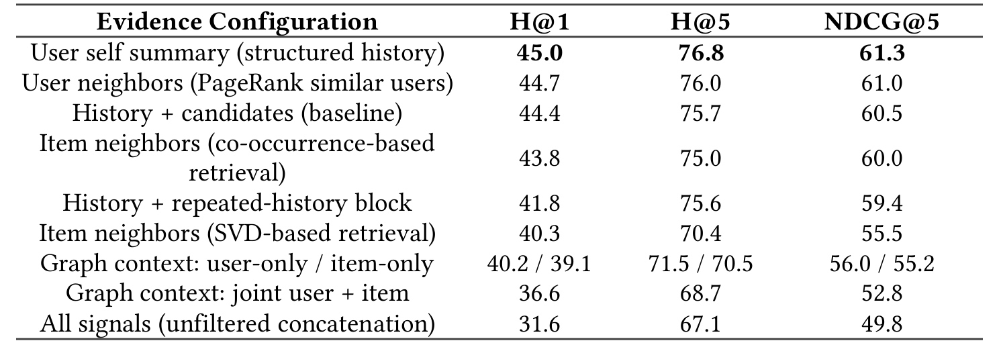
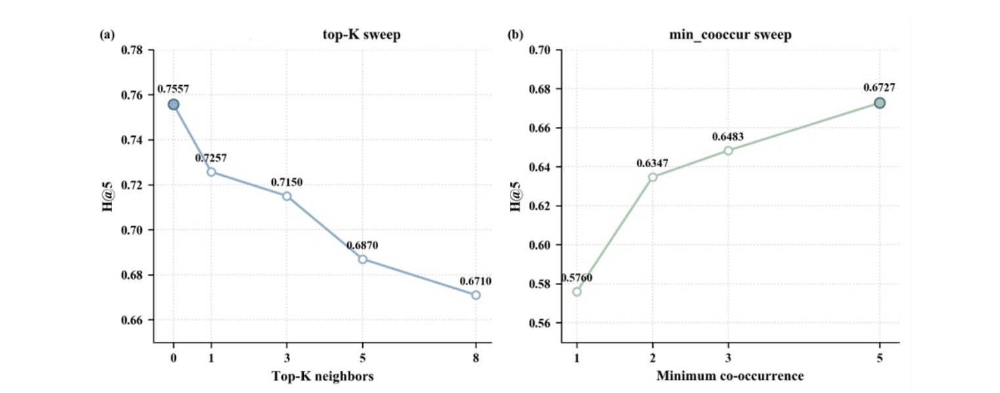
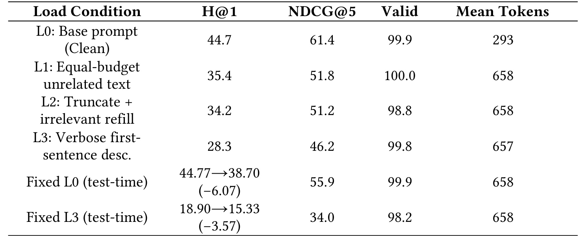
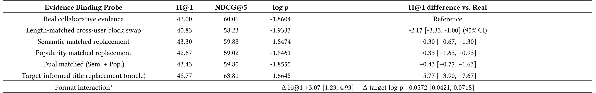
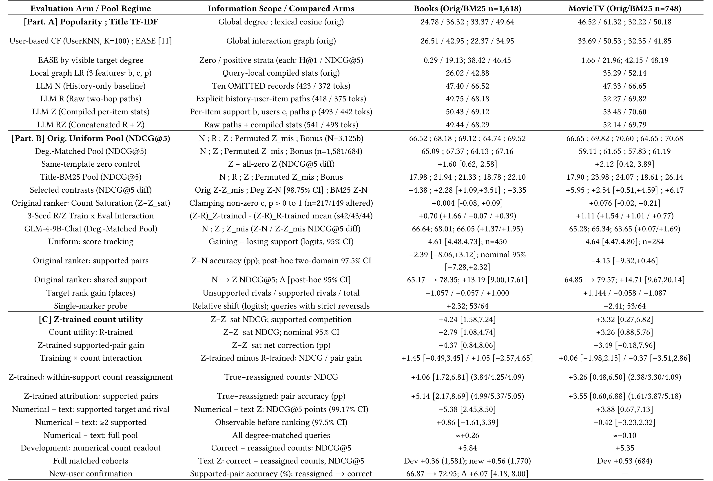
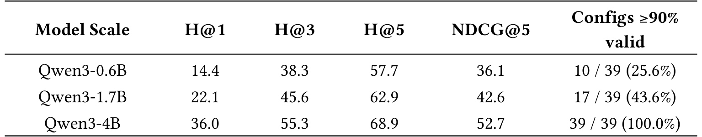
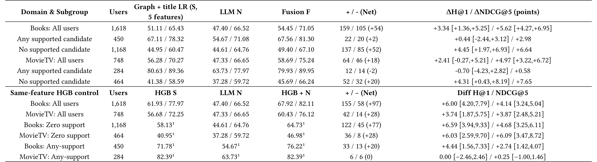

Evidence Diet：图证据何时帮助大模型排列相互竞争的候选
Evidence Diet: When Graph Evidence Helps LLMs Rank Competing Candidates 由中国科学技术大学的 Yuchong Hu、Zhao Zhang、Ziyao Zhao、Haoyu Wang 与平安科技的 Jing Xiao 合作完成。论文于北京时间 2026 年 11 月 16 日 18:16 首次提交 arXiv，本笔记记录日期为 2026 年 11 月 18 日。论文入口：arXiv:2611.20837。当前材料是一篇五页预印本，本轮未核验到独立代码或项目页，也没有复现实验。它以推荐排序中的图协同证据为对象，主要贡献是实验诊断协议，而非一个新的通用推荐骨干。
当多个候选都获得图上的支持时，支持者和路径计数究竟属于哪个候选，还会影响大模型的排序吗？保留支持状态和计数集合，只交换计数归属，才能分开检验模型是在识别“有支持的候选”，还是在利用计数排列这些候选。
1. 背景和问题
协同过滤图为语言模型提供了一种与标题语义不同的证据。用户读过某本书，其他读过这本书的人又读了另一候选，这条连接可能包含共同兴趣、系列关系或相近读者群的信息。把这些路径写进提示，模型就有机会同时利用个人历史和人群行为。然而，提示里出现关系记录，只能证明模型收到了信息，不能证明最终排序实际使用了这些关系，更不能证明它理解了每条记录的数量和归属。Evidence Diet 要追问的正是这种区别：整体命中率提高时，究竟是图证据提供了可分辨的偏好，还是候选旁边多了一个易识别的支持标记。
这种区别在只有一个候选有支持时容易被遮蔽。假设十个候选中，目标物品存在共读路径，其余九个完全没有路径。只要给有支持者统一加一点分，目标就可能从较后位置升到前列。这里既不需要阅读中间用户身份，也不需要比较不同路径，更不需要识别十个支持者与两个支持者之间的差别。一个看似“理解了图”的结果，可能仅由二元特征完成。相反，当目标与竞争物品都获得支持时，粗粒度的存在性标记便不再足够；模型是否还能利用支持强度，才成为更严格的问题。这也是本文不断切换候选池与条件子集的原因。
作者的另一个关切是证据数量与排序质量之间并不存在简单的单调关系。加入用户邻居、物品邻居、摘要和描述会占用更多上下文，但这些信息可能重复历史、引入不相关主题，或使模型把注意力分配到错误实体上。若实验只比较长提示与短提示，还可能混入训练分布、证据来源、输出格式和候选难度等变量。因此，本文把来源分解、负载干预、实体交换、格式交叉和图计数置换分别安排成对照。这些对照指向不同机制，不能把任意一次下降都统称为“大模型不擅长长上下文”，也不能把任何一次提升都归因为协同推理。
在推荐研究中，候选池本身尤其重要。随机负例通常比真实检索得到的强负例更容易区分，且目标物品与负例在可见交互度、共读路径存在率上可能差异很大。如果图只给目标提供支持，模型容易依赖数据构造中的捷径；若负例也拥有相近交互度，就需要在更相似的行为证据之间比较。本文保留随机负例，同时增加精确度匹配负例和标题检索负例。三者仍是每个用户十个物品的小候选排序协议，却能揭示同一模型在不同竞争条件下为何得出不同结果。不能因为有“推荐”二字，就把这样的离线小列表成绩读成百万物品召回率。
信息的存在、信息的正确归属以及模型使用信息的方式，也需要分开。把某个候选的支持计数移给另一个候选，可能同时改变两者是否有支持；这种交换足以检测模型是否跟随图记录，却不能独立证明它使用了计数大小。作者进一步限制交换范围，让已有支持的候选互相交换完整的计数对，保持有支持的候选集合、计数多重集合和提示长度都不变。若排序仍下降，就比“删除全部图信息”更接近对计数归属的直接检验。这里所称归属效应是固定候选与模型下的受控离线干预效应，并不是用户接受推荐后的行为因果效应。
本文还把“模型能否输出一个合法排列”与“排列是否有用”分离。完整排列生成要求输出十个互不重复的编号，小模型可能重复、漏项或混入其他数字。若把这类结果直接计算命中率，质量变化会掺入语法失败；若修复输出又不披露，读者则可能把修复程序的工作算到模型头上。作者报告严格有效率，并明确对排名指标采用去重、补齐的规则。后续候选 logit 协议进一步避免自由生成整个排列，从而更直接观察候选打分。两套协议回答的问题并不相同，阅读不同表格时必须记住它们的训练方式和输出接口。
从研究定位看，Evidence Diet 没有声称图文本永远无用，也没有声称所有证据都能压成三个数字。路径训练和计数训练的模型对同一种提示表示会有不同反应；候选竞争越强，二元支持与计数大小越需要区分；结构分数与历史语言模型分数的互补又随子群和融合器而变化。论文真正提供的是一组更细的可证伪问题：加入信息是否只是增加负载，交换用户证据是否损害个性化，替换物品标识是否重要，支持内部的计数排列是否影响结果，最后哪些收益仍超过一个简单数值加分基线。这种问法有助于避免把一个总平均指标当作完整机制解释。
对阅读这篇短论文而言，最容易误判的并非公式，而是表格的条件。开发集重复使用的用户、新用户冻结确认、随机负例、度匹配负例以及目标和竞争者都受支持的子集，分母并不相同。同为 NDCG@5 的几个提升，有的来自有无图信息，有的来自正确与错误归属，有的来自数值与文本表示，不能横向拼成一条递增的模型演进路径。本文没有线上实验、服务时延或端到端成本数据；研究价值集中在诊断设计与局部离线证据。后文会按原文先解释协议，再讨论证据消费诊断和分数互补，保留这些限制。
还应把本文的“无支持”理解为可见图与展示历史范围内没有找到路径，而不是用户从未对候选产生过偏好。路径只从被展示的历史物品出发，构图还要移除用户与目标边，一部分物品本身在冻结图中没有可见交互。只靠图结构的模型在这种情况下可能给多名候选相同分数，语言模型却仍可使用标题和历史主题。反过来，有支持也可能只是流行物品共享大量读者，未必表示最契合当前用户。因此，缺少路径、拥有路径以及路径更强分别对应不同信息条件，后续结构与语言分数融合必须对这些条件分开统计，才能判断互补来自何处。
2. 方法
2.1 两套协议：完整排列生成与候选 logit 打分
原文第一套实验要求 Qwen3 对一个被遮蔽的目标物品与九个负例生成完整排列。Books 原始开发图包含 207,759 条交互、7,377 个用户和 120,925 个物品；MovieTV 开发数据包含 79,737 条交互、5,649 个用户和 28,987 个物品。对按时间排列的序列先去掉末尾两次交互，再把倒数第五个位置作为目标，用更早的前缀构造历史。第一批实验取加载顺序中符合历史长度要求的前一千名用户；九个均匀负例互不重复，并排除用户整个已知序列中的物品。候选随机排列在各对照之间保持一致，减少位置和采样差异。
完整排列协议同时交叉十三种输入、三种模型规模与三个种子，共一百一十七种设置。部分来源对照分别训练自己的适配器，因此它们的差异包含训练方式与输入来源的共同影响。负载实验另设置固定检查点，只改变推理时输入，这才隔离同一模型接收额外文本时的变化。输出处理先删除完整思考标签片段，抽取数字字符串；严格有效率只认可恰好构成一到十排列的输出。计算排名指标时，则保留合法编号的第一次出现，缺失编号按升序补到末尾。严格有效率是原始格式可靠性，修复后的命中率是另一指标，二者不能互相替代。
第二套实验把排序拆成对最后位置 A–J 十个候选标签的 logit 打分。基础模型冻结，只训练新的低秩适配器；原始 Qwen3-4B 排序器使用两千名 Books 用户，每个用户提供四种提示视图，训练五百次更新。视图交叉证据块顺序和候选级支持标记，监督是候选受限交叉熵，没有教师蒸馏损失。原始路径与完整计数最初只在评估时出现，因此原始排序器的计数饱和结果，不能自动外推到专门用路径或计数训练的排序器。作者另外训练成对的路径、计数版本，并用另一模型家族作扩展对照，正是为检验训练分布是否改变证据消费。
2.2 从原始路径到计数记录，再到候选竞争控制
四种主要输入视图共享用户历史与候选顺序。N 不提供实际图内容，而是为每个候选写省略标记；R 列出从最多八个展示历史物品，经其他用户到候选的不同路径；Z 将同一批路径编译成支持存在性、不同支持用户数和不同路径数；RZ 同时写入原始路径与计数。Z 删除的是中间实体身份及路径关联的具体展开，保留的是候选级统计。全部评估提示在四千零九十六 token 内，无截断。需要注意，N 的标记比 R 中的无路径标记更长，而 Z 显式写零值，因此输入更结构化不必然意味着 token 更少；表格会报告实际长度，不能先验把收益解释成压缩收益。
三类候选池分别使用均匀负例、遮蔽后与目标可见度精确匹配的负例，以及通过历史标题检索得到的 BM25 负例。Books 在构图前移除五百七十名用户的全部交互，并为其余用户遮蔽目标，得到 190,023 条可见边；MovieTV 也遮蔽既有目标及按哈希选中的边，剩余 69,088 条。度匹配尽量消除“目标更热门所以更容易获得支持”的简单解释，标题检索则增加语义相似的竞争者。作者另用保持节点度的换边链生成随机图，比较真实图中目标支持相对于负例支持的富集量，检查采样结构与真实协同结构的作用。
为了判断模型有没有使用计数，实验先把正计数饱和为一，保留支持是否存在，却删除强度；再交换完整记录，允许支持本身转移；最后只在有支持候选内部交换成对的支持用户数与路径数。这三个操作的约束逐步变严。最后一种保持支持集合、数字集合和 token 长度不变，避免把数量效应与新增支持效应混在一起。八种不看标签的置换等权参与比较，其中包含恒等置换和没有改变输入的情形，也不要求目标每次都移动。比较正确记录与平均置换记录，测量的是正确归属的平均贡献，而不是挑选最坏交换后的最大损害。
作者还直接把计数变成数值分数，添加到历史基线 logit 上，以检验自然语言提示是否是必要接口。原文的行内定义可写为：
符号解释：$b_i$ 表示候选 $i$ 是否受支持，$c_i$ 是不同支持用户数，$p_i$ 是不同路径数；$\alpha,\gamma,\delta$ 是在独立调参用户上选择的权重。对数降低大计数的尺度影响，二元项允许单独建模有无支持。该分数加入 N 的候选 logit，而不是加入一个重新训练的图文本模型。三个种子分别选得不同权重，并固定后迁移到 MovieTV；因此数值与文本的比较应在同一历史分数、同一候选与指定子集内读取。
单标记探针把一个不看标签选定的候选，从全零记录改成一条支持记录，再研究十个 logit 的变化。作者把变化中心化，并与只抬高该候选的理想方向比较：
符号解释：$\Delta\ell$ 是十个候选的 logit 变化向量，横线表示查询内均值；$\mathbf 1$ 是全一向量，$e_m$ 只在被标记位置 $m$ 为一。中心化去掉所有候选共同平移的部分，使比较聚焦相对打分。若模型只执行简单支持加分，$D$ 应大体沿 $v$ 变化；其他未标记候选之间的相对次序变化，则表明还有更复杂的耦合响应。
符号解释：$g$ 是拟合的支持平移幅度，求和覆盖对应查询，$E_{\mathrm{shift}}$ 是该方向解释的变化能量比例；原文分别拟合领域共享幅度和查询特异幅度。高解释率只表示大部分分数变化像支持加分，不能据此把剩余变化判作噪声，也不能单凭它证明模型具备计数推理。
2.3 分数融合与新用户冻结确认
原文最后用五个特征训练结构模型：支持存在性、支持用户数与路径数的对数、候选标题与平均历史标题的 TF-IDF 相似度、可见物品度。在线性模型之外，还使用相同特征的直方图梯度提升模型，避免把线性结构模型的不足误认为大模型独有能力。结构分数与历史语言模型分数按查询内十个候选标准化，再融合：
符号解释：$S$ 是结构模型候选分数，$N$ 是没有实际图记录的历史语言模型分数，$z$ 在同一查询的十个候选中减均值、除以总体标准差，标准差下限为 $10^{-6}$；$\lambda$ 在独立 Books 调参集上选择后迁移到另一领域。融合器的输入并不是生成的自然语言解释，其作用是比较两路打分是否互补。训练、调参、评估用户分开，线性模型和非线性模型各自选择配置，不能把某个融合器的子群结论推广到全部模型。
新用户确认进一步冻结用户资格、提示模板、目标位置、候选顺序、检查点和唯一主要终点。作者排除此前全部 Books 用户，按哈希选取新用户，用目标之前至少四个不同物品作为历史，并查询冻结图，不把新用户边补入图。最终有一千七百七十名度匹配用户，其中二百七十四名的目标与至少一个竞争者都有支持。主要终点是这部分用户中，目标排在有支持竞争者前面的比例；先在用户内部平均，再跨用户汇总，并对用户做自助重采样。这样既保留独立确认，也把结果的条件分母明确限定在支持内部竞争，不能称为全体新用户准确率。
3. 实验结果
3.1 证据来源和负载
第一组结果先回答“哪些信息值得放进提示”。作者分别训练各来源配置，在 Books 同样的一千名用户、三个种子上比较；因此这里考察的是一整套来源配置，不是固定模型的单一输入删改。

Table 1 中，结构化用户自摘要的 H@1 为 45.0%，略高于历史加候选的 44.4%，用户邻居也接近基线。共同消费检索的物品邻居 H@1 为 43.8%，高于 SVD 物品邻居的 40.3%，说明同为物品侧证据，具体获取方式仍然重要。把全部信号未经筛选拼接后，H@1 降至 31.6%，NDCG@5 从基线 60.5 降至 49.8；用户图上下文与物品图上下文同时放入，也低于各自单独使用。它支持减少无筛选信息的判断，但没有把下降独立分解成长度、噪声与训练优化三种贡献。重复一段历史同样低于基础历史配置，意味着即便内容来自本人的真实历史，重复展开也不能保证有益。表中各行的独立训练性质要求我们把结论限于这些配置，不能直接给线上同一模型设定一个通用上下文上限。
随后两套独立扫参检查邻居数量与共读过滤。这里的曲线对应不同检索设置，而不是同一横轴上可拼接的连续系统迭代。

Figure 1 左面板中，邻居预算从零逐渐增至八，H@5 从 75.57% 下降至 67.10%，说明更多未过滤邻居可能引入不利证据。右面板把最小共读阈值从一增至五，H@5 从 57.60% 升至 67.27%，与提高证据筛选强度的方向一致。不过，右面板使用直接共读、两跳桥接、聚类和 PageRank 回退的另一套候选级检索流程，起点远低于左图；不能从两图相近的末值推导“过滤恢复了全部额外上下文损失”，也不能把左右差值当作同一个实验的净收益。图中没有误差条，趋势应理解为所示设置下的观测，不足以确定稳定最优阈值。可迁移的操作是分别记录增加邻居和改变过滤的候选覆盖、证据质量与最终排序，而不是单凭文本量选配置。
负载实验继续区分“分别训练的模型”与“同一个已训练模型临时收到更多文字”。固定检查点的对照尤其关键，因为它排除了适配器重新训练的影响。

Table 2 的前四行中，L0 基础提示平均 293 token，L1 等预算无关文本、L2 截断后用无关文本填充、L3 冗长描述约为 657–658 token。各自训练后，H@1 分别为 44.7%、35.4%、34.2%、28.3%，但 L1 排列有效率仍为 100%。固定干净 L0 检查点后，加入无关说明使 H@1 从 44.77% 降至 38.70%，下降 6.07 个百分点，95% 区间为 [4.20, 7.97]；排列有效率仍为 99.9%。这提供了较直接的证据：排名质量下降并不要求先出现输出格式损坏。固定 L3 也从 18.90% 降至 15.33%，说明训练时见过冗长描述不保证对新增无关负载免疫。注意表中固定行的 NDCG@5、有效率和 token 数都是加载后的数值，只有 H@1 列同时列出前后变化；不能把其他列自行扩写成未报告的前后对照。负载实验的 L0 与来源实验的历史基线也不是同一个训练臂，数值略有不同不应强行对齐。
3.2 实体绑定、竞争和计数归属
实体绑定实验先移动整段用户证据，再替换语义或流行度匹配的物品标识，并加入一个使用目标信息的诊断上限。它试图区分用户关联信息与具体物品身份的作用，而不是证明所有物品身份都可任意删除。

Table 3 中，真实协同证据 H@1 为 43.00%，长度匹配的跨用户证据交换后降至 40.83%，差为 -2.17 个百分点，95% 区间 [-3.33, -1.00]，目标 log 概率也下降。相比之下，语义匹配、流行度匹配与两者结合的物品替换，点估计相对真实配置的 H@1 差均不超过 0.43 个百分点，区间都跨零。这说明这些受控替换没有显示清晰损失，不意味着模型在任意条件下都不使用物品内容。目标知情的标题替换达到 48.77%，比真实证据高 5.77 个百分点，但它用目标共交互选择证据，是明确的 oracle，不能作为可部署候选构建方式。格式交叉比较保留证据正文，将平铺与层级格式分别用于训练和评估，报告的交互差为 H@1 +3.07 个百分点；这是一种训练与评估格式匹配效应，不是“层级格式在所有训练模型上都更优”的主效应。
最密集的 Table 4 把候选池、提示表示、支持归属、计数幅度及新用户确认放在一个原始编号表中。下图完整保留原始 A、B、C 三部分，阅读时应沿每一行的比较定义和分母解释，不能只取最大提升。

Table 4A 的均匀候选池里，Books 的历史基线 N、原始路径 R、计数 Z 与二者拼接 RZ，NDCG@5 分别为 66.52、68.18、69.12、68.29。Z 比 R 高 0.94 点，95% 区间 [0.18, 1.71]，但 Z 提示反而更长，分别约 493 与 418 token，因此这个对照不能解释成“短文本优于长文本”。MovieTV 中 Z 同样高于 R，而拼接回路径没有继续提升。把完整记录在候选间错误分配，Books 与 MovieTV 的 Z 分别下降 4.38 和 5.95 点，说明候选和记录的正确对应重要。但是这种整记录置换会移动支持存在性，尚不能排除模型只跟随是否有路径的标记。
Table 4B 用更强竞争限制这个解释。度匹配池保持目标路径，却使更多负例也有支持。此时 Z 相对 N 的 NDCG@5 提升为 Books +2.28、MovieTV +2.54 点，校正后的 98.75% 区间分别是 [1.09, 3.51]、[0.51, 4.59]。与相同模板的全零记录相比，提升仍为 +1.60 与 +2.12 点，避免把模板差异误作图信息收益。另一方面，原始二元支持训练排序器把所有正计数压成一后，NDCG 变化仅 +0.004 与 +0.076 点，区间跨零；这直接显示，至少该排序器的大部分图收益不需要计数幅度。原始模型在目标与竞争者都受支持时，成对准确率相对 N 的差甚至为负，两个校正区间均跨零，所以整体列表提升不能直接当作支持内部排序能力提升。
专门训练过计数或路径后，结果更细。Table 4C 在目标与至少一个竞争者都受支持的开发子集上，保留完整计数相对饱和计数使计数训练模型的 NDCG@5 提升 4.24 与 3.32 点，路径训练模型也提升 2.79 与 3.26 点。但两种训练方式对“计数相对饱和”的增益差区间跨零，所以不能宣称计数训练已显著增强所有计数消费。更严格的支持内部记录置换，在 Books 141 个、MovieTV 104 个查询上保持支持集合、计数对集合和长度不变，正确归属仍比重分配高 4.06 与 3.26 个 NDCG 点，区间分别为 [1.72, 6.81]、[0.48, 6.50]。它说明不只是二元支持，计数给谁也影响结果；然而对应整个度匹配开发池的归属贡献只有 +0.36 与 +0.53 点，不能把小子集提升直接乘到全流量。
数值注入的比较更需要辨别可观测条件。在知道目标与竞争者都受支持的子集内，数值计数相对文本 Z 的 NDCG@5 高 5.38 与 3.88 点，99.17% 区间均为正；但“目标受支持”依赖离线目标标签，不能拿它直接定义线上路由。改用排序前可知的“至少两个候选受支持”，差变为 +0.86 与 -0.42 点，97.5% 区间都跨零；整个度匹配池更只有约 +0.26 与 -0.10 点。因此正文支持的是条件机制诊断，尚不足以推荐全面用数值替代文本。额外筛出的历史与计数严格冲突用户中，数值、文本与纯历史成对准确率分别为 58.26%、55.16%、41.74%，仍然是另一种预定筛选条件，不能混作整体分数。
新用户冻结确认是归属证据中更强的一环。此前未使用的 Books 用户中，一千七百七十名满足度匹配，其中二百七十四名即约 15.5% 同时有支持目标与竞争者；正确计数归属相对平均重分配使成对准确率从表中 66.87% 到 72.95%，原文未四舍五入差为 +6.07 个百分点，95% 区间 [4.18, 8.00]。这不是全部一千七百七十人的 Top1 命中率，也不是新用户总体在线点击提升。作者没有把新用户边加进冻结图，且预先固定主要终点，有助于减少开发期反复选择的影响；确认目前只覆盖 Books，MovieTV 的独立新用户结果并未给出。表中小数差先计算再四舍五入，应保留原文差值而不强行把显示后的两端相减改成 6.08。
单标记探针补充说明了“简单加分”解释的程度。给一位候选添加一条支持记录，其相对 logit 位移约为 Books +2.32、MovieTV +2.41。领域共享平移可解释 72.45% 与 76.00% 的变化能量，允许每个查询单独幅度后解释 88.63% 与 89.19%。但两个领域均有 53/64 查询出现未标记候选间的严格次序反转，所以模型并非严格等价于独立二元加分器。合理结论是主要变化接近支持平移，同时存在候选间耦合；若要评价复杂图理解，应继续观察这些耦合是否带来稳定正确的目标排序，而不能用“有反转”本身当作有效推理的证据。
3.3 规模、结构分数与历史分数融合
规模实验回到完整排列生成，检查不同模型在十三种来源与三个种子下能否稳定遵守输出格式。它和前面的候选 logit 排序不是同一条输出接口。

Table 5 中，Qwen3-0.6B、1.7B 和 4B 的平均 H@1 分别为 14.4%、22.1%、36.0%，达到至少 90% 严格有效率的配置分别只有 10/39、17/39 与 39/39。小模型的排名指标仍使用前述修复规则，因而这些数字不能作为未经修复就能部署的排序器质量。4B 的每个配置都达到阈值，也不表示每个输出都合法，更不表示证据选择已优化：来源表和负载表已经展示同一规模会因提示配置大幅波动。规模结果同时提示方法比较应保留原始有效率、修复后质量和修复成本；若只展示其中一个，会混淆生成可靠性与排序偏好。论文没有对候选 logit 接口报告同样规模的完整生产开销，因此不能从这张表推导统一的线上最小模型规模。
最后一组结果比较五特征结构分数 S、纯历史语言模型 N 与二者标准化融合 F，既检查整体，也按候选列表是否含图支持拆分用户。表格下半部分把线性结构模型替换成同特征非线性模型，避免仅凭一个较弱结构基线判断语言模型的额外价值。

Table 6 上半部分中，Books 线性结构模型的 H@1 为 51.11%，融合后达到 54.45%，净增加五十四个 Top1 命中；其中无支持子群贡献五十二个，而有支持子群只净增两个。MovieTV 整体净增十八个，无支持子群净增二十个，有支持子群反而净减两个。尽管两个领域整体 NDCG 都提升，不能据此说所有支持子群 Top1 均改善。若只在无支持查询调用语言模型，离线可跳过约 27.8% 与 38.0% 的调用，但 NDCG@5 分别比全调用低 0.83 与 0.22 点；这只是特定线性融合器的离线路由取舍，没有时延、吞吐或业务价值等价换算。
下半部分的同特征 HGB 对照进一步改变了子群判断。Books 的 HGB H@1 从 61.93% 融合到 67.92%，原文差为 +6.00 点；MovieTV 从 56.68% 到 60.43%，差 +3.74 点。Books 有支持子群也得到 +4.44 点 H@1，95% 区间 [1.56, 7.33]，所以“语言模型只在完全没有图证据时有用”的结论不成立。MovieTV 有支持子群则没有净 Top1 增益，区间包含正负两侧。融合收益来自具体基线、数据域和子群共同决定，不能拿线性版本的调用节省比例直接套到非线性融合器。去掉可见物品度后，四特征线性模型与历史分数的融合仍有提升，为互补并非仅由流行度特征造成提供了附加证据，但它仍没有隔离所有语义、训练和采样因素。
这些结果的统计区间也有层次。作者主要使用一万次按用户配对的自助重采样，多检查点差先在同一用户内平均；一些跨域主要对照用 98.75% 区间，数值与文本相关六重比较使用 99.17%，新用户唯一主要终点保留 95%。不能把全部方括号都标成同一置信水平。更重要的是，这些区间以已固定检查点为条件，不能完全代表重新训练模型、重新抽样数据和重新构图后的全部不确定性。总体上，论文较充分支持“正确计数归属在支持竞争中有额外作用”和“历史分数可能补足结构分数”，但没有提供一个跨候选池、跨领域、跨融合器始终占优的单一表示方案。
4. 总结
Evidence Diet 对图增强推荐最有价值的贡献，是把“模型收到图证据”拆成能够逐步检验的机制。未过滤拼接会损伤排序；格式合法也可能排序退化；支持存在性可以解释部分收益；在更严格的支持内部竞争条件下，完整计数和正确归属仍带来额外价值。新的 Books 用户冻结确认减轻了只在开发样本反复观察的疑虑，但其 +6.07 个百分点属于二百七十四名条件用户的成对准确率。整池归属收益更小，数值注入与文本提示的整池差也接近零。把这些结论放在一起，比截取一条最大的提升更能指导后续研究。
对推荐系统的直接启发，是把图特征的存在性、强度和归属分别作为验收对象。共同消费路径未必需要全量文本展开，计数可能已携带许多排序信号；但不能只用随机负例与支持稀少的池证明文本图推理。更实用的比较应固定候选、历史和检查点，同时保留简单二元加分、对数计数加分、文本表示和相同特征非线性结构模型。本文中的 Books 支持子群从 HGB 与历史融合中仍可获益，表明精简图证据并不等于移除语言模型。真正应选择的是每类样本需要什么信息接口，并在对应全流量分母下核算收益。
对大模型与 Agent 记忆，本文提示一种可借鉴的证据诊断方式：把被检索到的记录在候选实体间重分配，同时控制支持存在性、记录集合与长度，观察打分是否跟随正确归属。它能帮助分开“发现一条看似有用的记录”与“把记录用于正确对象”。不过，把推荐图计数的结果迁移到自然语言记忆是研究设想，本文没有做记忆问答或工具调用实验。单标记探针显示分数变化有耦合，也提醒不能只看注意力或输出解释来证明证据使用；应设计任务内的可观测干预与正确性终点。
局限需要保留四项。第一，所有主要任务只有十个候选，不能直接外推全目录召回、长列表重排或线上曝光。第二，部分开发用户与调试过程重复使用，独立确认只有一个领域和一个条件终点；全体用户上的收益仍需新的冻结评估。第三，不同训练表示的交互并非全部显著，输入长度、候选难度与适配器训练仍共同影响很多表格。第四，统计区间主要条件于固定检查点，没有覆盖所有训练随机性，且没有公开可核验的独立代码、线上效果、端到端延迟和成本证据。固定图也代表特定历史快照，真实新增物品、偏好变化与隐私过滤下的路径可用性尚未检验。
后续最值得做的三类工作都可沿本文的清晰对照推进。首先，在新的冻结用户和更接近生产检索的候选池上，复查正确与支持内部重分配的差，同时报告条件子集比例和全池差。其次，在相同历史分数上严格比较二元、数值计数、文本计数与路径，保留同特征强结构基线，避免将一个弱基线造成的空间当作语言推理贡献。最后，重新训练多个检查点并追踪无支持、有支持、支持竞争和历史计数冲突子群，结合实际调用开销验证路由取舍。本文没有给出可以直接部署的统一门槛，但提供了足够具体的证据条件，帮助后续实验知道应当证成什么。